ATLAS
ATLAS Project
The ATLAS project has vast experience with autonomous navigation in controlled environments, this is especially shown in projects such as the ATLASCAR1 which was a full sized prototype equipped with several state of the art sensors(LARlabs 2018). Currently, the ATLAS project is now evolving to deal with real road scenarios with the ATLASCAR2 project which is the new full sized prototype being used for research purposes equipped with LIDAR sensors and a Point Grey Camera.
The ATLAS project was created in 2003 and it started with robot prototypes that were later developed to participate at AD competitions taking place at the Portuguese National Robotics Festival. From this project. three small-sized platform robots were built, which were very successfull having won some prizes in other robotics competitions.
As time goes on, the project grew evolving into full-sized prototypes: the ATLASCARs, ATLASCAR1 which is the first full-sized platform and it is based on a Ford Escort Station Wagon, and the ATLASCAR2 which is a full-sized platform and it is based on a Mitsubishi i-MiEV.
Prototype robots of the ATLAS project for the 2003 Portuguese National Robotics Festival
The ATLASCAR is one of the projects developed from the ATLAS project, which is a project developed by the Group of Automation and Robotics at the Department of Mechanical Engineering of the University of Aveiro, Portugal. The focus of the ATLAS project was to develop and enable the proliferation of advanced sensing and active systems designed for implementation in automobiles and affine platforms. These advanced active systems keep on being improved, or newly developed, using the data acquired from vision, laser and other sensors.
ATLASCAR
On this section we give an insight into each and every one of the ATLASCAR projects, explaining its main function and their external components.
ATLASCAR1

The ATLASCAR1 was equipped with several LIDAR sensors as well as several cameras. The data acquired about its enviornment was gathered by the scanners present in the car which would then process building perception into the car allowing it to move and perform task autonomously, like moving and executing maneuvers in small and controlled places. In the end, the ATLASCAR1 brought some very interesting and succesfull results which were then adapted to the new full-sized platform of the ATLAS project which is the ATLASCAR2, which was the vehicle used for research in this dissertation.
ATLASCAR2
The ATLASCAR2 is equipped with various state of the art LIDAR sensors and Point Gray Camera, and it is also a full electric vehicle, unlike the ATLASCAR1, which means it is easier to modify, test and control unlike the previous version.
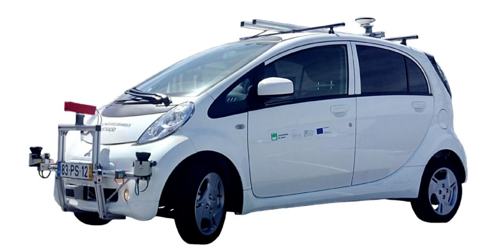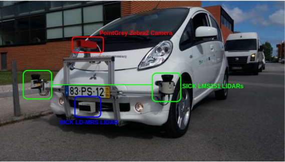
The ATLASCAR2 is based in the platform of the 2015 Mitsubishi i-MiEV, a full electric vehicle. The battery that powers the engine is the same powering the camera and the sensors. The main characteristics of the car can be seen in the following table:
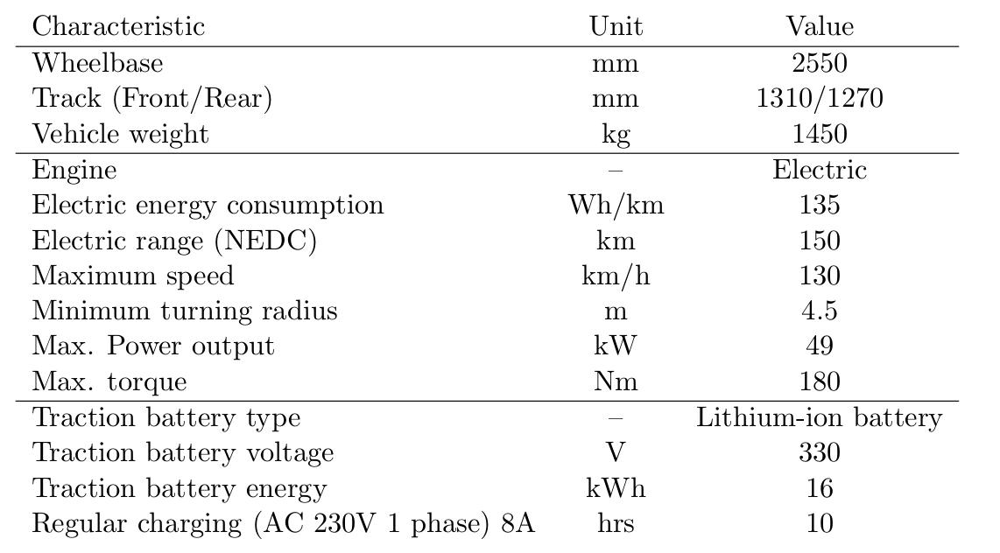
The sensors and the camera used by the ATLASCAR2 can be seen down below.
LIDAR Sensors
The sensors equipped in the ATLASCAR 2 are two SICK LMS151 LIDAR, a SICK LD-MRS LIDAR and a PointGrey Zebra 2 Camera. The sensors have been mounted in the front of the car in an aluminum infrastructure designed by Correia 2017. These devices are connected to a network switch installed in the car to which a computer can be plugged to receive the data from the sensors.
SICK LMS151
The SICK LMS151 is a LIDAR sensor designed to be used outdoors. It is a planar infrared scanner with a large planar aperture angle often used in robotics and in AD fields for its high scanning frequency and operating range. This scanner is also able to scan distances through fog, glass and dust (multi-echo technology). This scanner is provided with an Ethernet TCP/IP interface with high data transmission rate (SICK 2018b).
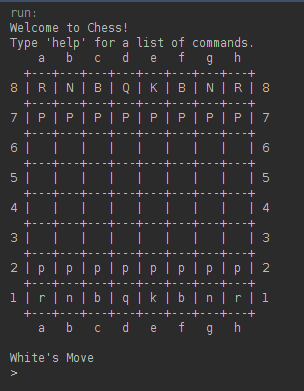 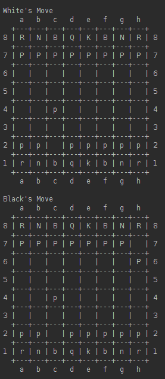
WEB User Interface - REST API
The Chess Tourney Web Portal is the web interface between the Chess Tourney platform and any person that wants to see a game or tournament. This API uses a REST-ful engine with a set of endpoints(described below) to manage all the information, by collecting data from the GlassFish Servlets and/or Database and displaying it in the WEB API. It can show a specific game beetween two players, chess-moves, frequencies and other devolpments.
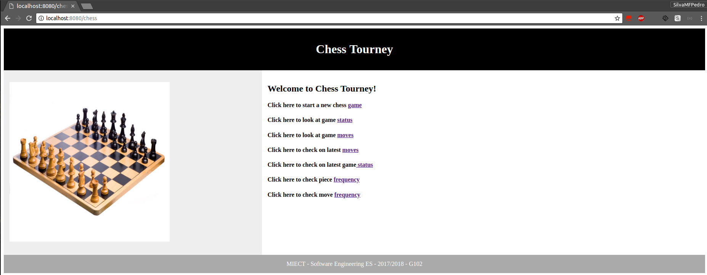
As mentioned earlier the API uses a REST-ful engine with a set endpoints that collects data of the Game Tracker module from the Glassfish Servlets and displays it on the web Interface.
This REST-ful engine uses 7 endpoints, each with a specific purpose using the HTTP methods GET, POST and PUT:
- POST GAME
If the user issues a POST to this endpoint by clicking in the "Click here to start new chess game" option it will create a brand new game, resetting the pieces back to their original starting positions resetting the board to its initial state
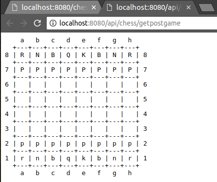
- GET GAME
If the user issues a GET to this endpoint by clicking in the "Click here to look at game status" option it will return the chessboard state according to the GameTracker module
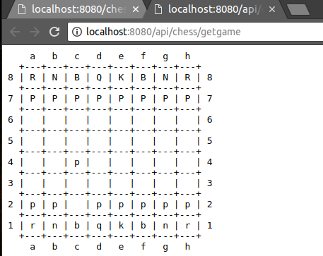
- GET MOVES
If the user issues a GET to this endpoint by clicking in the "Click here to look at game moves" option it will return the current list of valid moves, given the placement of the pieces and whose turn it currently is
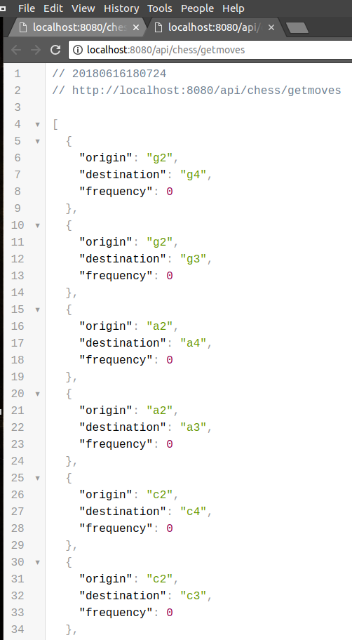
- POST MOVES
If the user issues a POST to this endpoint by clicking in the "Click here to check on latest moves" option it will return the chessboard state according to the last move being made on the GameTracker module or it will return the chessboard state according to a specific move specified by the user on the URL
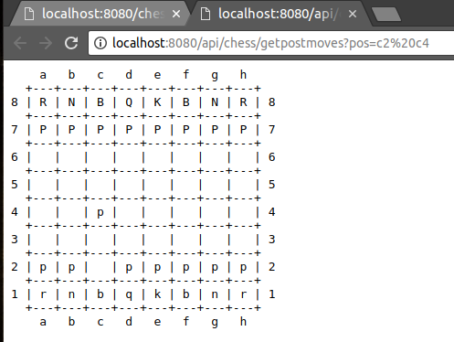
- PUT GAME
If the user issues a PUT to this endpoint by clicking in the "Click here to check on latest game status" option it will return the chessboard state according to move id being set on the GameTracker module giving the chessboard status according to chess moves of each user
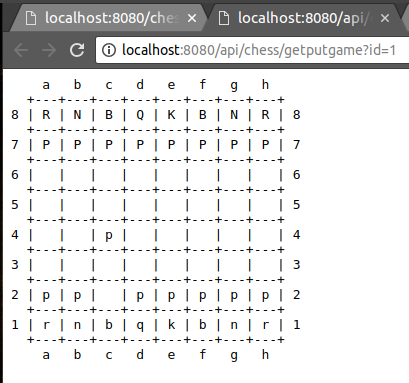 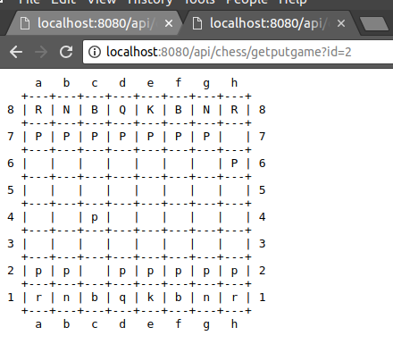
- GET PIECE FREQUENCY
If the user issues a GET to this endpoint by clicking in the "Click here to look at game moves" option it will return the current list of the pieces given their placement on the board as well as their play frequency according to the game status
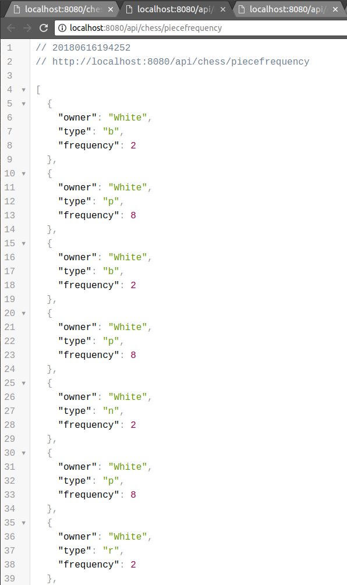
- GET MOVES FREQUENCY
If the user issues a GET to this endpoint by clicking in the "Click here to check move frequency" option it will return the current list of valid moves as well as their frequency on the playlist, given the placement of the pieces and whose turn it currently is
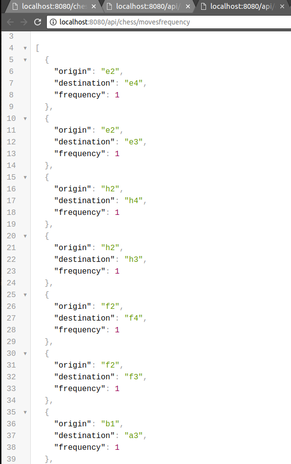
Dumper
The Chess Tourney Dumper is a JPA persistance module that store information from Broker. It saves all the information gathered by the system, including all the Chess Moves from player's games. Within a defined interval, this component will fetch data from the current streams and save it on Database.
GlassFish Servlets
GlassFish Servlets have the function to add the interactive web front end to the Chess Tourney, ensuring the portability and scalability of the application between broker and restAPI
Tests
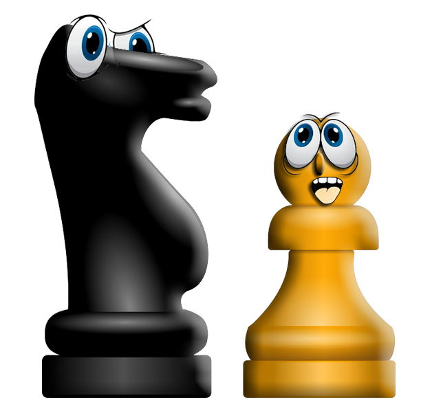
On this section we will give an insight into the test part of each of the compenents, explaining its main functions and their purpose.WEB User Interface - REST API
The API provides a series of tests using MockitoJUnitRunner class to see if the api responds accordingly.
Theses tests were divided into 5 different parts
| Test | Purpose |
|---|---|
| Test Create New Game | Checks if we can create new chessboard according to the GameTracker information |
| Test Get Fetches from Session | Checks if we can get chessboard game state from the GameTracker information |
| Test Put Makes with Transition | Checks if we can get chessboard game state with the move id provided by the url |
| Test Invalid Move Put | Checks if the move is valid or not |
| Test Post Game | Checks if chessboard can be reset according to the information provided by the GameTracker |
Deployment
This section is still to be delpoyed.